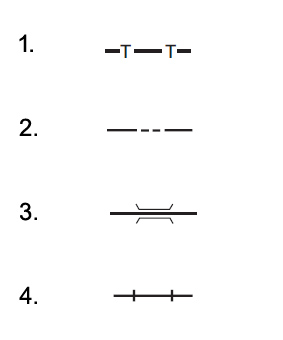
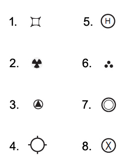
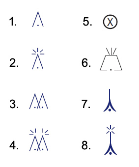
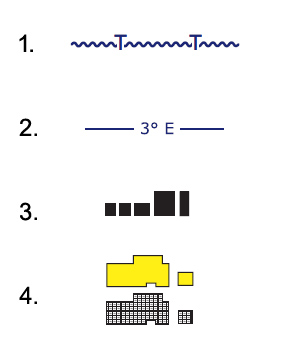

Carte VAC
Carte VACPDF · 254 KoCartes OACI
Cours : carte de type conique conforme (carte OACI 1/500 000) la direction d'un méridien donne la direction : du nord vrai. Carte OACIPDF · 2,9 Mo
- En vous référant à l'image montrée à l'écran, le signe conventionnel sur une carte OACI qui représente une ligne téléphonique est le numéro :
1
2 --> frontière internationale
3 --> un pont routier
4 --> une voie ferrée.

- En vous référant à l'image montrée à l'écran, le signe conventionnel sur une carte OACI qui représente une tour d'observation est le numéro :
3
1 --> château / fort
2 --> centrale nucléaire
4 --> aérodrome civil
5 --> aérodrome réservé aux hélicos
6 --> des ruines
7 --> aérodrome terrestre militaire
8 --> aérodrome fermé

- En vous référant à l'image montrée à l'écran, le signe conventionnel sur une carte OACI qui représente un groupe d'obstacles éclairés est le numéro :
4
3 --> groupe d'obstacles non éclairés
6 --> volcan en activité
8 --> obstacle exceptionnellement élevé éclairé

- En vous référant à l'image montrée à l'écran, le signe conventionnel sur une carte OACI qui représente des bâtiments est le numéro :
3
1 --> ligne haute tension - Sur une carte aéronautique 1 : 500 000, les obstacles sont représentés lorsque leur hauteur est supérieure à...
100 m. - L'altitude topographique d'un aérodrome est précisée :
1 - sur les cartes aéronautiques 1 : 500 000
2 - sur les cartes VAC
3 - dans les messages de types NOTAM (Notice to Air Men)
4 - dans les messages METAR
Choisissez la réponse exacte la plus complète.
1 - 2.
Performance de l'UAS
Classes
GPS- Un télépilote qui utilise un drone de classe C5 doit disposer des informations suivantes : 1 - vitesse ; 2 - position géographique ; 3 - hauteur ; 4 - altitude
3 - Vous achetez un UAS de classe C5, son fonctionnement :
Doit le rendre indépendant de l'unité de commande. - Un UAS de classe 6 doit être capable de fournir pendant le vol, au pilote à distance, des informations claires et concises sur :
Sa position géographique, sa vitesse et sa hauteur au-dessus de la surface ou du point d'envol.
- Pour connaître les limites techniques d'utilisation de votre UAS, vous utilisez :
Le manuel d'utilisation. - Les informations publiées sur les capacités de performance des aéronefs sans équipage à bord sont toujours liées...
à l'atmosphère standard. - Vous allez faire voler votre UAS par temps très chaud, vous pouvez vous attendre
à une diminution des performances en raison de la diminution de la densité de l'air - En VLOS, au-dessus d'une zone contrôlée au sol, sans survole d'un rassemblements de personnes, le drone peut avoir une dimension caractéristique maximale (envergure, ou un diamètre de rotor ou une distance entre les rotors) :
Pouvant aller jusqu'à 3 mètres. - Quel paramètre permettra d'assurer une bonne maniabilité de votre UAS tout au long de ses évolutions en vol
S'assurer d'une bonne sécurisation de la charge transportée.
- Un systèmes de Géolocalisation et Navigation par un Système de Satellites (GNSS) classique...
Assure une couverture mondiale. - Le nombre minimal de satellites GNSS disponibles nécessaires pour calculer la position complète d'un aéronef (latitude, longitude et altitude) est de :
4 - La vitesse fournie par le GPS est une vitesse...
Sol. - Sans rentrer d'autres paramètres, un GPS peut fournir directement au pilote à distance :
La vitesse sol et l'heure UTC.
- L'utilisation d'un aéronef sans équipage à bord à proximité d'une zone de fortes perturbations électromagnétique est...
Autorisée seulement si le pilote à distance peut confirmer qu'il n'y aura d'interférence pas avec la télécommande avant et pendant le vol. - Vous devez effectuer un vol à proximité d'une zone de fortes interférences électromagnétiques :
Il y a un risque majeur de perte de la liaison de contrôle de votre drone.
Calculs
- Sur une carte d'échelle 1 : 250 000, 2,5 cm représentent :
6,25 km
- Une distance de 37 km entre deux villes équivaut en nautiques (NM) à :
20 NM. il faut diviser par 1.852km - Un mètre (m) équivaut à :
3,28 ft.
Procédures
Avant-vol
Avant-vol- Dans le cadre d'une check-list prévol, que représente la procédure connue sous le nom de «MEUH» :
M météo, E environnement, U UAS et H facteurs Humain - A la préparation du vol, vous vous renseigner sur les observations et prévisions météorologique, vous trouverez des informations pertinentes :
Sur le site internet de l'aviation civile qui vous orientera vers des liens pertinents pour obtenir des informations météorologiques à jour. - Préalablement au vol en scénario STS-02, la fonction geocaging doit être
Réglée et exploitable. - Le geocaging consiste pour le télépilote
à établir un volume dans lequel l'UAS doit évoluer. - Le document qui vous permet de savoir s'il y a une activité particulière en cours sur un aérodrome situé à proximité de votre zone de vol est :
Le NOTAM. - La présence d'une grue à proximité du seuil d'une piste d'un aérodrome peut être signalée par un
NOTAM. - On vous demande d'effectuer des photos d'une antenne située en haut d'un pylône qui a une hauteur de 115 mètres. A la demande de l'entité responsable de cette antenne, en vous tenant dans un rayon horizontal de 50 m de cette antenne, vous pourrez monter jusqu'à une hauteur maximale au-dessus de l'antenne de :
15 mètres. - Vous observez la présence d'un important groupe d'oiseaux dans la géographie de vol
Vous attendez que la situation s'améliore pour débuter vos évolutions.
- L'acronyme «ERP» désigne en français
Plan d'intervention d'urgence (Emergency Rescue Plan) - Le plan d'intervention d'urgence permet entre autre :
De définir les critères permettant d'identifier une situation d'urgence. - Le plan d'intervention d'urgence consiste à :
Disposer d'une réponse adaptée et réfléchie en cas de survenance d'une situation d'urgence. - Votre drone sort de la géographie de vol, quitte le volume d'exploitation puis pénètre dans la zone tampon, vous déclenchez dans l'ordre :
La procédure d'intervention, puis la procédure d'urgence.
- Parmi les actions préalables au vol, celle commune aux STS-01 et STS-02 qui incombe au télé-pilote est :
De maintenir adéquate la zone contrôlée au sol définie par l'exploitant.
- En ce qui concerne les effets d'un vent fort dans un environnement escarpé sur un aéronef sans équipage à bord, on peut dire...
Qu'à proximité du sol, la turbulence générée aura un effet potentiellement désastreux pour l'aéronef. - Lors d'évolutions au-dessus d'une zone boisée, le risque majeur est...
D'entrer en collision avec des oiseaux. - Pour connaitre les conditions de pénétrations dans une zone R (réglementée) :
Il faudra vous conformer aux publications AIP.